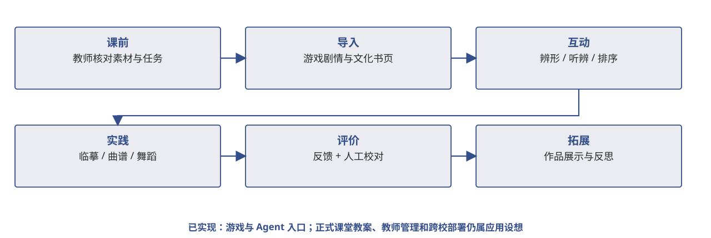

（三）分析过程校园情境：一节课怎样使用
课堂路径可以从教师预审材料开始，再进入剧情导入、互动学习和实践评价，最后展示作品并反思。这里明确区分现有可体验页面与尚待试教的教学组织方式。

证据与状态 正式教案、教师管理与跨校部署尚属设想；不可写成已经运行的教学后台。
课堂路径可以从教师预审材料开始，再进入剧情导入、互动学习和实践评价，最后展示作品并反思。这里明确区分现有可体验页面与尚待试教的教学组织方式。

证据与状态 正式教案、教师管理与跨校部署尚属设想；不可写成已经运行的教学后台。